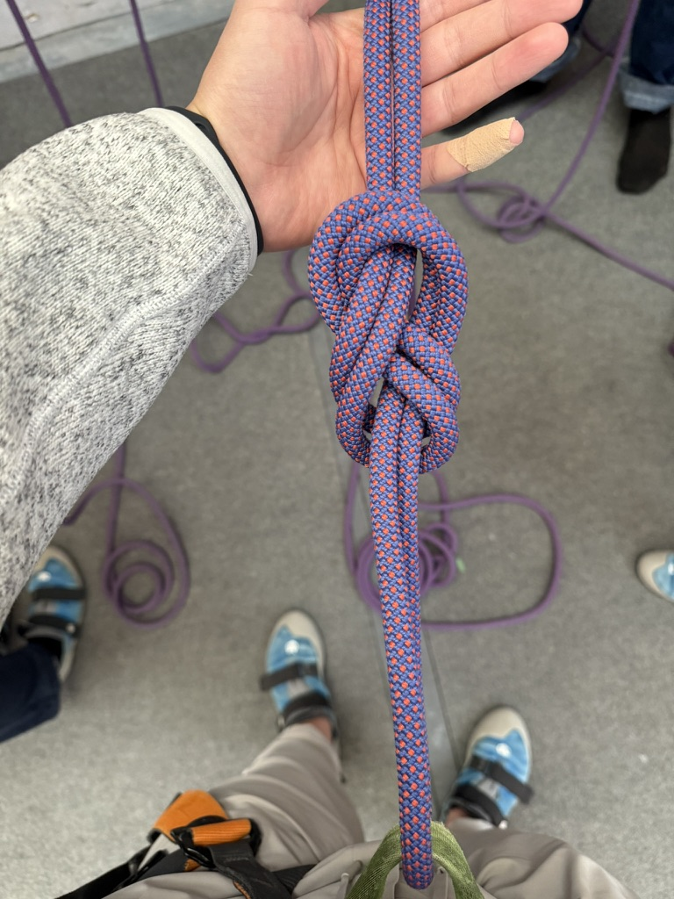
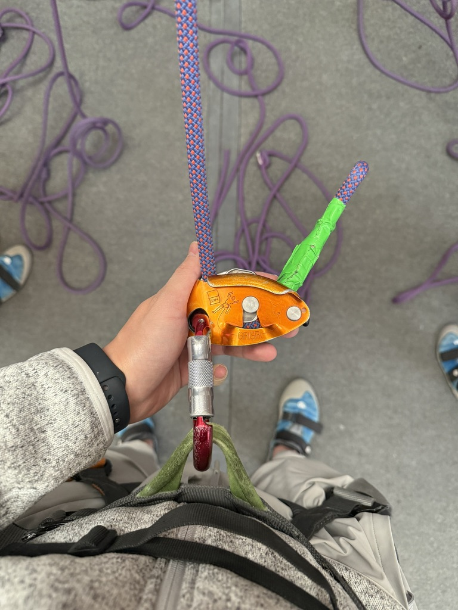
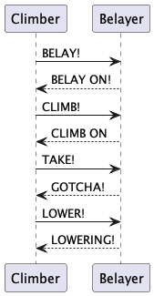

Top roping is a beginner-friendly climbing technique.
The climber is securely tied to one end of a rope that runs through an anchor system at the top of the climb, and back down to the belayer.
The belayer is the climber's safety guard on the ground, who manages the rope using a safety device, such as a "GriGri". Both climber and belayer wear harnesses, allowing the rope to be securely attached to their waists and hips.
As the climber ascends, the belayer takes in slack to minimize any fall distance.
In the event of a fall, the belayer applies a downward force to lock the rope in place, stopping the fall.
Initially, I found the experience intimidating. Here is what I identified as the sources of my fear:
1. Distrust in the safety mechanism.
2. Lack of confidence in Physical Capabilities.
3. Insufficient training in managing scenarios like slipping or swinging, where controlled movement are critical.
Safety is paramount in climbing. Here is a checklist I follow before every climb:
1. Ensure the harness is correctly worn. All straps should be untangled and securely looped through metal buckles.
2. The rope should be tied to the climber's harness using a figure-8 follow-though knot, leaving two fist-width of rope before a backup knot is tied.
3. For the belayer, the Grigri safety device should be properly loaded through the belay loop, with the shiny side facing out and the auto-lock engaged.
4. Make sure the rope is untangled, clean and free of knot or damage.
5. Confirmed that both the climber and the belayer are attached to the same rope.
The rope is attached to the climber with a knot like a figure '8'.
The rope is attached to the belayer with a GriGri safety device. The device itself is basically a reinforced D-ring with twist auto-lock and lever connected to rope brake.
There's a simple handshake process akin to a network protocol where the climber and belayer start the procedure with "BELAY" and "BELAY ON". All the commands in the protocol expect acknowledgements from the receiver. In case of silence or ambiguity, the climber repeats the request until hearing a response. In emergency of a fall, the belayer will immediately engage the brake.

- Physical Workout Rock climbing is a full-body workout. It builds core strength, flexibility, and endurance.
- Mental Fortitude Overcoming my fear was deeply satisfying. The sport constantly challenges me to stay calm under pressure.
- Trust and Communication Success in climbing depends on mutual trust and clear communication. These lesson extend beyond the wall into everyday life.
- A Life-saving skill While rare, emergency situations require quick thinking and a reliable partner. The ability to protect and be protected is empowering.